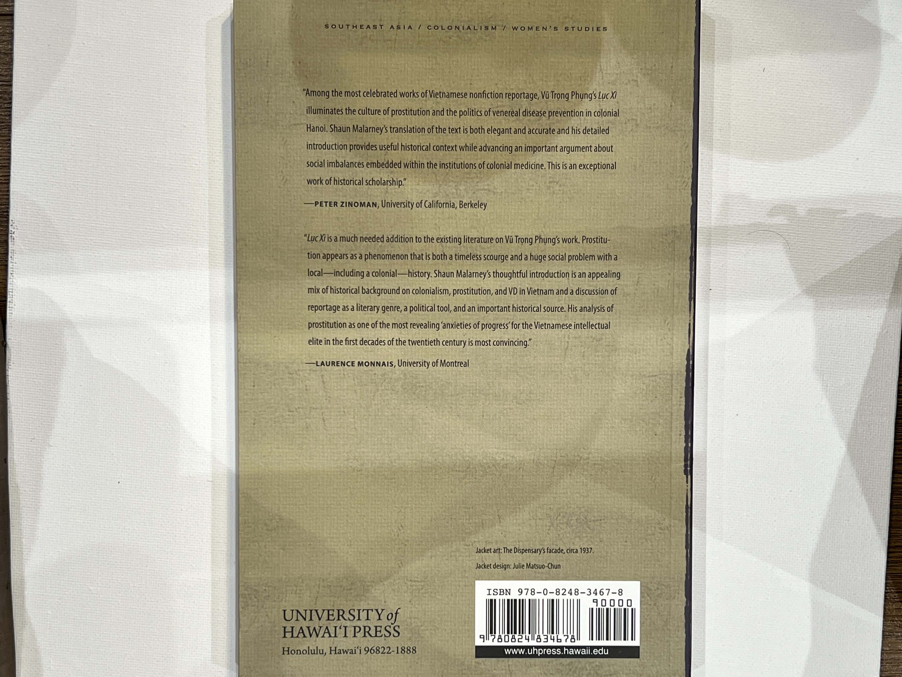
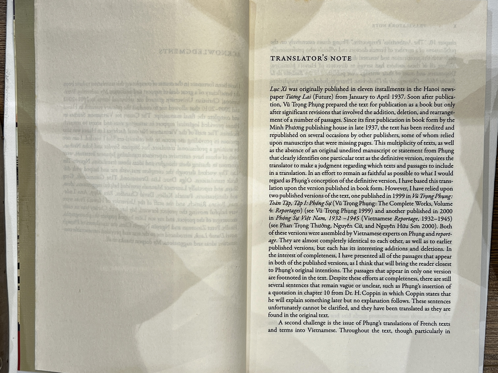
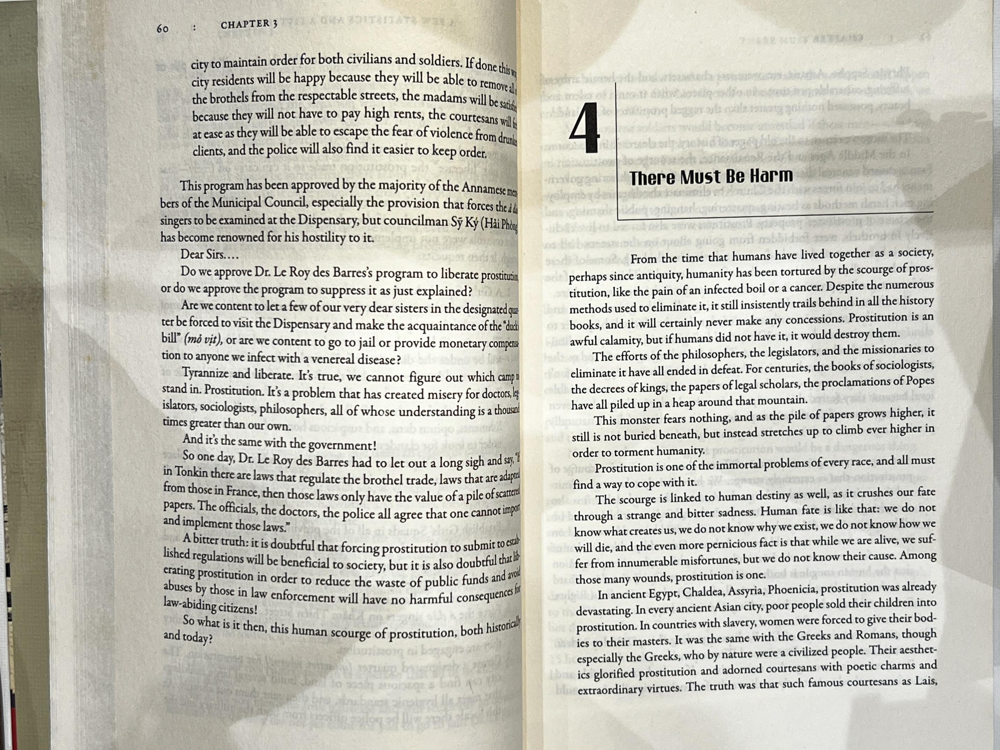

70 000 VND
Luc Xi
Vu Trong Phung
Luc Xi is a work of reportage by Vu Trong Phung that exposes the reality of prostitution and venereal disease in colonial Hanoi in the 1930s. The book focuses on the Nha Luc Xi (The Dispensary), a medical facility that examined and treated prostitutes for sexually transmitted infections. Through interviews, observations, and documents, Phung reveals the lives and struggles of the sex workers, the corruption and incompetence of the colonial authorities, the hypocrisy and prejudice of the society, and the impact of the sex industry on public health and morality. The book is a powerful critique of the colonial system and its exploitation of the Vietnamese people.
Language: English